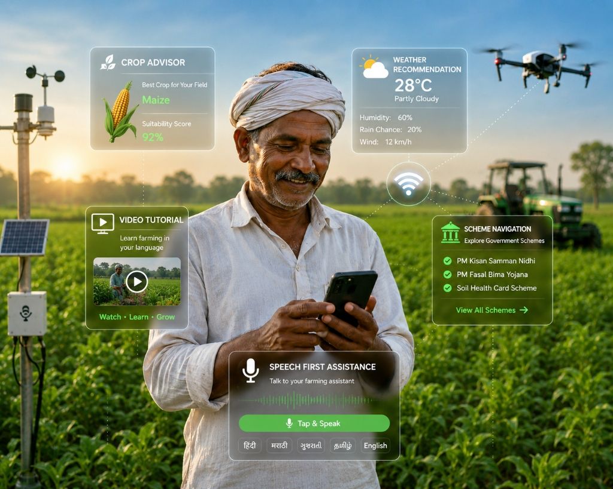

Smart Guidance. Better Harvests. Brighter Future.
An AI-powered platform helping Indian farmers discover government schemes, calculate benefits, learn modern farming techniques, and receive smart crop recommendations.

Active Farmers Guided
Subsidies Disbursed
Powerful AI tools designed to simplify farming and improve productivity.
Talk to the AI naturally in Marathi, Hindi, English, and other regional languages. Ask farming questions using your voice and receive instant spoken responses.
Start TalkingReceive personalized crop recommendations using AI based on soil type, weather conditions, rainfall, pH level, and season.
Recommend CropFind personalized government schemes, subsidies, PM-Kisan benefits, crop insurance, and eligibility details in one place.
Explore SchemesWatch multilingual video tutorials on modern farming, disease prevention, irrigation, fertilizer usage, and best agricultural practices.
Watch VideosFollow 4 simple steps to digitize your farm registry and verify subsidy matchings.
Enter your phone number, land size, and active crop configurations to register your agricultural dashboard.
Upload land titles and state certificates. AI scans and automatically pre-fills parameters using Document OCR scanning.
The rules matching engine parses parameters to fetch active central and state-level subsidy offerings immediately.
Download your verified Farmer Credentials Resume in PDF, and receive updates about payouts via automatic Twilio SMS.
Discover how AgroVision is making agricultural benefits accessible across India.
"Before using AgroVision, matching eligible credit facilities was a slow, complex guessing game. Now, my certificates are scanned instantly, my profile is verified, and I can download a PDF of my agricultural credentials resume."
Got questions about AgroVision? We have answers.
Sign up now to scan documents, check crop matching confidence, and print farmer credential resumes.
Create Free Profile